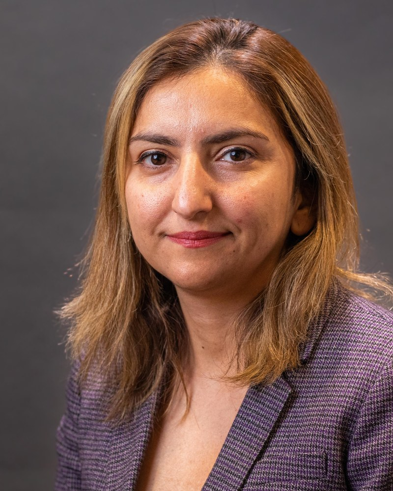

Cosmointel, Vaughan, Ontario, Canada

Despite extensive research, consciousness remains without a unified scientific definition. To address this conceptual gap, Mohammad Ali Taheri introduced the theory of T-Consciousness, a non-physical entity proposed as the third element of the universe, complementing matter and energy. According to this framework, T-Consciousness serves as the origin of information, matter, and energy, manifesting through various T-Consciousness Fields (TCFs)—subsets of the Cosmic Consciousness Network (CCN) representing the collective consciousness of the universe. Although these fields cannot be detected through conventional physical instrumentation, their effects can be examined empirically by observing changes in biological and physical systems. This study investigated the potential biological and informational effects of two types of TCFs—TCF1 (Faradarmani®) and TCCF (T-Consciousness Charge Field) —on wound healing using both in vivo and in vitro models. In the animal study, C57BL/6 mice were randomly assigned to control and TCCF-treated groups following the induction of standardized wounds. Over a 14-day period, sterile distilled water was applied to the wounds of the control group, while TCCF-exposed water was administered to the treatment group. Wound healing progress was systematically monitored, and tissue samples were analyzed histologically to assess inflammation indices, angiogenesis, collagen deposition, and skin structure regeneration. In the cellular study, the effects of TCF1 and TCCF were evaluated using endometrial stem cells (EnSCs) in a scratch assay model. Four experimental groups were established: (1) control (no treatment), (2) control with water, (3) TCF1-treated water, and (4) TCCF-treated water. Wound closure was assessed via imaging at 0, 6, 12, and 24 hours, and healing rates were determined through statistical analysis. Results from the animal model indicated that wounds treated with water exposed to TCCF exhibited approximately a 60% greater reduction in wound size compared to the control group by the end of the study. Histological analysis revealed significant enhancements in angiogenesis, collagen formation, and epidermal regeneration, along with improved inflammatory profiles in the liver and kidney tissues of TCCF-treated animals. In the cellular assay, the TCCF-treated group demonstrated a marked acceleration in wound closure within 6 hours compared to the control. After 24 hours, the TCCF- and TCF1-treated groups achieved 56% and 33% wound closure, respectively, relative to the untreated control. Overall, the TCCF treatment was approximately 75% more effective in promoting wound healing than the TCF1 treatment. Collectively, these findings suggest that water exposed to T-Consciousness Fields, particularly TCCF, may acquire therapeutic informational properties that enhance biological healing processes. Both in vivo and in vitro evidence support the hypothesis that TCFs can influence living systems through non-physical informational interactions. Further research is warranted to elucidate the molecular and informational mechanisms underlying these effects and to explore the potential biomedical applications of T-Consciousness Fields in regenerative medicine and cellular repair.
Simin Rahighi, Ph.D., is a structural biologist with extensive expertise in applying experimental and computational approaches to elucidate the three-dimensional architecture of macromolecules and to investigate their structure–function relationships. Her research has focused on uncovering molecular mechanisms that underlie complex biological processes, integrating biophysical analysis with data-driven modeling. Over the past decade, Dr. Rahighi has bridged academic research and industry innovation, serving as an Assistant Professor at Chapman University, where she led a structural biology laboratory and mentored graduate students, before transitioning to the biopharmaceutical sector.
LinkedIn: https://www.linkedin.com/in/simin-rahighi-87b4a972/